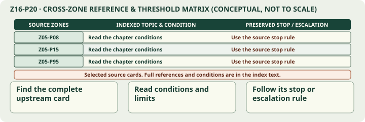

Z16-P20 · Field reference atlas · New manuscript
Seasonal Phenology and Missing-Feature Identification Stop Index
Locate the original encyclopedia cards for seasonal Phenology and Missing-Feature Identification Stop Index.
When it applies · Offline reference lookup. The linked chapter defines the situation, audience and limits.
Equipment · Offline reader or the complete linked source cards in print.

Actions
- Open Z05-P08 for seasonal Phenology Shifts and Life-Stage Identification Traps; Z05-P15 for multi-View Diagnostic Photography and Provenance Standards.[A10, B10, B02]
- Open Z05-P95 for fungal Anatomical Cutaway and Separate Mycological Schema; Z06-P25 for reading Mammal Tracks with Metric Scale and Substrate Limits; Z08-P14 for weathered Rinds, Patinas and Limits of Field Identification.[A10, B05, H16, R03]
- Read the linked card’s applicability, equipment and stop conditions together. Keep review and source limitations attached to any excerpt.[A10, ED]
Failure recognition · Acting on a keyword or title while overlooking an upstream exception or stop condition.[A10, ED]
Verify · Confirm the exact page ID and read the full conditions before using the reference.[A10, ED]
Stop or change course · If the situation falls outside a linked card’s conditions or its stop rule applies, stop using this index as a decision aid. Follow the full card and current local directions.[A10, ED]
Evidence and editorial notes
- A10 · FEMA / Ready.gov · Make a Plan (current web edition)
- Section: Offline reader navigation, historical lineage, and HOLD transparency · Conditions: Using the complete 16-zone offline archive, zone readers, and print proofs
Support: Navigation aids expose draft status, reconstruction lineage, open diagnostic photo needs, and pending specialist holds on every lookup path.
Limitations: This index entry does not independently establish any safety, regulatory or diagnostic instruction. · Conflicting evidence: None noted.
Editorial note: Index design and cross-reference policy. Substantive directions come from linked upstream chapter claims. · Specialist reviewer: Accessibility, print QA, and editorial reviewer
Primary source · checked 2026-11-24 - B02 · Bell Museum (UMN) · Bell Museum Specimen Collections Portal (Current web edition)
- Section: Curated herbarium and fungarium voucher specimen standards · Conditions: Corroborating species traits against documented physical vouchers
Support: Curated herbarium and fungarium vouchers link accepted scientific names, collection locality, habitat, and morphology to verifiable specimens.
Limitations: Image-search labels and crowd-sourced guesses cannot substitute for vouchered keys and qualified taxonomic review. · Conflicting evidence: None noted.
Editorial note: Core P19-A voucher discipline. · Specialist reviewer: Herbarium / fungarium curator
Primary source · checked 2026-11-25 - B05 · MyCoPortal · North American Fungal Voucher Collections Portal (Current web edition)
- Section: Separate fungal voucher collections and microscopic/macro traits · Conditions: Documenting macrofungi across North American collections
Support: Fungal taxonomy requires distinct anatomical schemas (cap, gills/pores/teeth, attachment, ring, volva, spore print, substrate, and often microscopy).
Limitations: Fungal species complexes frequently overlap macroscopically; photos alone cannot confirm edibility. · Conflicting evidence: None noted.
Editorial note: Keeps botanical and fungal schemas separate. · Specialist reviewer: Qualified mycologist
Primary source · checked 2026-11-25 - B10 · National Capital Poison Center · Poisonous Plants and Berries Overview (Current web edition)
- Section: Poisonous plants, berries, and dose-dependent pediatric risk · Conditions: Household, trailside, and wild berries, seeds, and foliage
Support: Many attractive wild berries, seeds, and roots contain cardiac glycosides, alkaloids, or oxalates that cause rapid toxicity, especially in children.
Limitations: Never sample unknown plants; recognition and consumption suitability remain separate decisions. · Conflicting evidence: None noted.
Editorial note: Separates recognition from consumption. · Specialist reviewer: Clinical toxicologist and botanist
Primary source · checked 2026-11-25 - H16 · Minnesota DNR · Mammals of Minnesota Species and Sign Reference (Current web edition)
- Section: Mammal ecology, seasonal movement, and sign interpretation · Conditions: Reading wildlife tracks, scat, browse, and trail patterns
Support: Substrate moisture, snow crust, and animal gait distort track dimensions; combine multiple signs and habitat context rather than single prints.
Limitations: Never handle unknown scat barehanded due to parasite eggs (e.g., Baylisascaris); sign interpretation is ecological observation, not harvest authorization. · Conflicting evidence: None noted.
Editorial note: Grounds Z06 tracking in ecology and hygiene. · Specialist reviewer: Wildlife ecologist
Primary source · checked 2026-11-25 - R03 · USGS · Collecting Rocks: Rock Classes and Mineral Property Basics (USGS GIP)
- Section: Igneous, sedimentary, and metamorphic rock classes · Conditions: Field rock class screening without laboratory petrography
Support: Observable grain interlocking, layering, bedding, or foliation helps separate broad rock classes.
Limitations: Weathered rinds and fine-grained dark rocks frequently mimic other classes visually; hand-lens inspection is preliminary only. · Conflicting evidence: None noted.
Editorial note: Establishes non-destructive classification limits. · Specialist reviewer: Field geologist
Primary source · checked 2026-11-25
Source lineage · New manuscript (Z16 P20 seasonal index) · Classification · New manuscript.